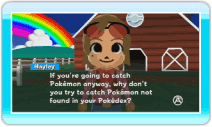
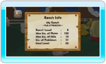

16 |
BBS (prikbord) |
 |

● Pokémon Wanted Dit is een verzoek van Hayley, waarin ze je vraagt om een bepaalde Pokémon mee te nemen naar de ranch. Dit gebeurt als je Pokémon van Pokémon Diamond of Pokémon Pearl overbrengt naar de ranch. Het verzoek voor een Pokémon heeft een tijdslimiet en zal na een bepaalde tijd worden verwijderd.
Pokémon in Pokémon Wanted (Pokémon gezocht) zijn meestal de Pokémon die je niet hebt kunnen vangen in Pokémon Diamond of Pokémon Pearl (op basis van Pokédex-gegevens). Als je aan het Pokémon Wanted-verzoek voldoet door de gezochte Pokémon te vangen en naar de ranch te brengen, verschijnt er een nieuw Pokémon Wanted-verzoek. Gehoor geven aan een Pokémon Wanted-verzoek brengt je dichterbij het voltooien van je Pokédex. Gebruik deze functie om de National Pokédex vol te krijgen!
Als je op het Pokémon Wanted-scherm naar een Pokémon wijst en op Opmerking: de eerste keer dat je Pokémon overbrengt naar de ranch zijn er nog geen opgeslagen gegevens van je Pokémon Wanted-prestaties. Deze worden opgeslagen vanaf de tweede keer.
Nadat je aan een Pokémon Wanted-verzoek hebt voldaan, kun je naar de pijl aan de onderkant van het scherm wijzen en op
Als je een Wanted Pokémon (gezochte Pokémon) naar de ranch overbrengt, zal Hayley je vaak vragen om een Pokémon te ruilen. De geruilde Pokémon verschijnt op de ranch als Hayley's Pokémon. De Pokémon die je van Hayley krijgt kan worden overgebracht naar je Pokémon Diamond of Pokémon Pearl Game Card. De Pokémon die je aan Hayley hebt gegeven kan echter niet worden overgebracht naar je Pokémon Diamond of Pokémon Pearl Game Card. 
● Ranch-gegevens Hier kun je zien wat het level van je ranch is, hoeveel Pokémon je bezit of hoeveel Mii-personages je maximaal mag overbrengen naar je ranch. |
 drukt, kun je kijken hoe je hem kunt vangen of aan welke voorwaarden je moet voldoen om dat te kunnen doen. Als Hayley in één keer om meerdere Pokémon vraagt, wijs dan naar de groene pijl en druk vervolgens op
drukt, kun je kijken hoe je hem kunt vangen of aan welke voorwaarden je moet voldoen om dat te kunnen doen. Als Hayley in één keer om meerdere Pokémon vraagt, wijs dan naar de groene pijl en druk vervolgens op  |
 |
 |